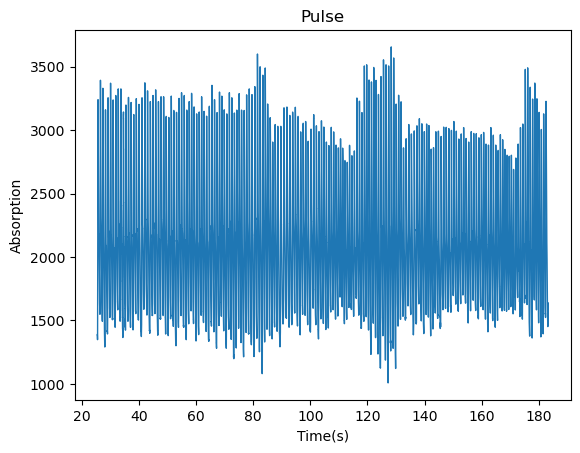
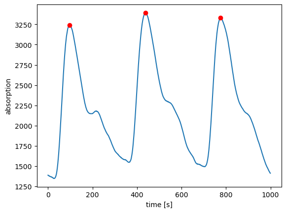
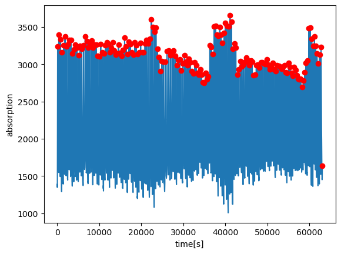
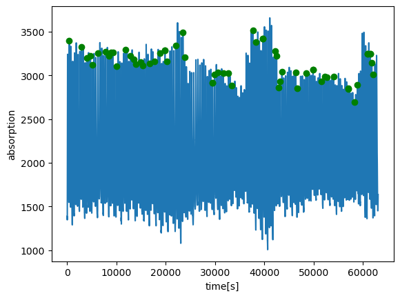
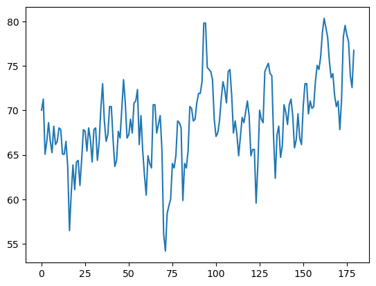

Code
!pwd # check current working directory so that yu can omit the path when openning a file/home/shch14/spaceMed2026/shch14Today, we are going to learn how to design algorithm, including: * What is Reproducible Documents and how to create/publish them with quarto * Write metadata for Reproducible Documents (above cell) * How to create array with different numpy attributes and method * Design an algorithm
Note: This notebook is copied and modified from session3
In this example, formula can be easily handled by Markdown
At time \(t_0\) to rocket starts to expel gas at a constant mass flow rate \(R\) meassured in kg/s and exhaust velocity relative to the rocket \(v_e\) in m/s. \[ \frac{dv}{dt} = -\frac{F}{m(t)} = -\frac{Rv_e}{m(t)} \tag{1}\] Integrating both sides of Equation 1 from 0 to \(T\) we get
!pwd # check current working directory so that yu can omit the path when openning a file/home/shch14/spaceMed2026/shch14aFile = open ('data/pulse_data.csv', 'r')# Read the data file
aFile.readline()
# read it so that we skip the firt line (or start the loop from second line)
time = []
absorption = []
for line in aFile.readlines():
line = line.split(",")
time.append(float(line[0]))
absorption.append(float(line[1]))print(len(time), len(absorption))63065 63065for i in range(10):
print(time[i], absorption[i])25.34206948640483 1388.0
25.344574881312038 1388.0
25.347080276219245 1385.0
25.349585671126455 1383.0
25.352091066033662 1383.0
25.35459646094087 1378.0
25.357101855848075 1378.0
25.359607250755285 1375.0
25.362112645662492 1375.0
25.3646180405697 1373.0# import python library first
import numpy
from matplotlib import pyplot#pulse data I loaded earlier
pyplot.plot(time,absorption, linewidth = 1.0)
pyplot.ylabel('Absorption')
pyplot.xlabel('Time(s)')
pyplot.title('Pulse')
pyplot.show()
a = numpy.array([1,2,3,4,5])
print(a)[1 2 3 4 5]a.shape #return array dimensions in () -> tuple(5,)a.dtypedtype('int64')a.nbytes #total memory consumption 40a = numpy.array([1,2,3,4,5],dtype=float) #assign data type
print(a)[1. 2. 3. 4. 5.]b = numpy.array([[1,2],[3,4]])
print(b)[[1 2]
[3 4]]c = numpy.zeros([10,20])
print(c)
c.shape[[0. 0. 0. 0. 0. 0. 0. 0. 0. 0. 0. 0. 0. 0. 0. 0. 0. 0. 0. 0.]
[0. 0. 0. 0. 0. 0. 0. 0. 0. 0. 0. 0. 0. 0. 0. 0. 0. 0. 0. 0.]
[0. 0. 0. 0. 0. 0. 0. 0. 0. 0. 0. 0. 0. 0. 0. 0. 0. 0. 0. 0.]
[0. 0. 0. 0. 0. 0. 0. 0. 0. 0. 0. 0. 0. 0. 0. 0. 0. 0. 0. 0.]
[0. 0. 0. 0. 0. 0. 0. 0. 0. 0. 0. 0. 0. 0. 0. 0. 0. 0. 0. 0.]
[0. 0. 0. 0. 0. 0. 0. 0. 0. 0. 0. 0. 0. 0. 0. 0. 0. 0. 0. 0.]
[0. 0. 0. 0. 0. 0. 0. 0. 0. 0. 0. 0. 0. 0. 0. 0. 0. 0. 0. 0.]
[0. 0. 0. 0. 0. 0. 0. 0. 0. 0. 0. 0. 0. 0. 0. 0. 0. 0. 0. 0.]
[0. 0. 0. 0. 0. 0. 0. 0. 0. 0. 0. 0. 0. 0. 0. 0. 0. 0. 0. 0.]
[0. 0. 0. 0. 0. 0. 0. 0. 0. 0. 0. 0. 0. 0. 0. 0. 0. 0. 0. 0.]](10, 20)d = numpy.arange(0,10)+1 #plus one will apply to every single element
print(d)
d.shape[ 1 2 3 4 5 6 7 8 9 10](10,)d.dtypedtype('int64')d.nbytes80d.T @ d
#'T'means transpose of array
#'@'means vector product np.int64(385)e = numpy.logspace(1,10,10)
print(e)
e.shape[1.e+01 1.e+02 1.e+03 1.e+04 1.e+05 1.e+06 1.e+07 1.e+08 1.e+09 1.e+10](10,)e = numpy.array([[1,2,3], [4,5,6]])e.shape(2, 3)e.T * 2array([[ 2, 8],
[ 4, 10],
[ 6, 12]])e.T @ e array([[17, 22, 27],
[22, 29, 36],
[27, 36, 45]])d = numpy.linspace(0,10,21)
print(d)
d.shape[ 0. 0.5 1. 1.5 2. 2.5 3. 3.5 4. 4.5 5. 5.5 6. 6.5
7. 7.5 8. 8.5 9. 9.5 10. ](21,)aarray([1., 2., 3., 4., 5.])numpy.max(a) # what is the maximum in arraynp.float64(5.0)numpy.argmax(a) # where maximum occursnp.int64(4)w = 50
# setting 50 means I expect the peaks
# will be at least 100 points apart
num_pnts = 1000absorption = numpy.array(absorption)
time = numpy.array(time)
peaks = []subset = absorption[:num_pnts]#Algorithm -- finding the peaks
for i in range(len(subset)):
# look w points to the left from my current point i
# but start point must be 0 (no less then 0)
start = max(i-w, 0)
# look w points to the right from my current point i
# but end points must less then total data points
end = min(i+w, len(subset))
window = subset[start:end]
#find the location maximum point in the window
max_pos = numpy.argmax(window) + start
#append max. point only when current point is that point
if i == max_pos:
peaks.append(i)
print(peaks)[96, 438, 774]pyplot.plot(subset)
pyplot.xlabel("time [s]")
pyplot.ylabel("absorption")
pyplot.plot(peaks, subset[peaks], "ro")
pyplot.show()
#apply to the whole dataset
peaks = []
for i in range(len(absorption)):
start = max(i-w, 0)
end = min(i+w, len(absorption))
window = absorption[start:end]
max_pos = numpy.argmax(window) + start
if i == max_pos:
peaks.append(i)
print(peaks)[96, 438, 774, 1142, 1502, 1851, 2211, 2578, 2929, 3291, 3651, 4003, 4356, 4724, 5092, 5452, 5828, 6252, 6647, 7022, 7414, 7787, 8159, 8548, 8919, 9272, 9626, 9992, 10344, 10703, 11076, 11429, 11781, 12153, 12514, 12855, 13183, 13531, 13891, 14247, 14587, 14927, 15286, 15662, 16034, 16388, 16746, 17087, 17413, 17751, 18109, 18465, 18812, 19167, 19505, 19842, 20173, 20535, 20880, 21246, 21628, 22024, 22393, 22767, 23144, 23483, 23822, 24177, 24527, 24872, 25237, 25664, 26106, 26516, 26920, 27319, 27693, 28070, 28439, 28787, 29136, 29488, 29888, 30262, 30639, 31005, 31345, 31686, 32034, 32381, 32719, 33052, 33385, 33712, 34012, 34312, 34632, 34953, 35275, 35601, 35948, 36305, 36660, 37008, 37344, 37671, 38002, 38340, 38662, 38983, 39317, 39672, 40020, 40376, 40745, 41102, 41448, 41797, 42140, 42477, 42822, 43191, 43556, 43921, 44323, 44698, 45040, 45387, 45736, 46058, 46378, 46696, 47019, 47343, 47700, 48084, 48440, 48791, 49161, 49524, 49863, 50206, 50556, 50895, 51231, 51576, 51940, 52299, 52643, 53001, 53363, 53703, 54031, 54359, 54703, 55040, 55381, 55721, 56048, 56367, 56688, 57003, 57307, 57605, 57907, 58213, 58530, 58855, 59178, 59512, 59852, 60189, 60542, 60878, 61184, 61485, 61790, 62098, 62422, 62752, 63064]pyplot.plot(absorption)
pyplot.xlabel("time[s]")
pyplot.ylabel("absorption")
pyplot.plot(peaks, absorption[peaks], "ro")
pyplot.show()
check the locations where signal transitions from positive to negative, and minimize noice by using a defined amplitude threshold
peak = []
for i in range(1,len(absorption)-1):
if (absorption[i+1] - absorption[i] < 0) and (absorption[i] - absorption[i-1] > 0):
if absorption[i] > 2500:
peak.append(i)print(peaks)[96, 438, 774, 1142, 1502, 1851, 2211, 2578, 2929, 3291, 3651, 4003, 4356, 4724, 5092, 5452, 5828, 6252, 6647, 7022, 7414, 7787, 8159, 8548, 8919, 9272, 9626, 9992, 10344, 10703, 11076, 11429, 11781, 12153, 12514, 12855, 13183, 13531, 13891, 14247, 14587, 14927, 15286, 15662, 16034, 16388, 16746, 17087, 17413, 17751, 18109, 18465, 18812, 19167, 19505, 19842, 20173, 20535, 20880, 21246, 21628, 22024, 22393, 22767, 23144, 23483, 23822, 24177, 24527, 24872, 25237, 25664, 26106, 26516, 26920, 27319, 27693, 28070, 28439, 28787, 29136, 29488, 29888, 30262, 30639, 31005, 31345, 31686, 32034, 32381, 32719, 33052, 33385, 33712, 34012, 34312, 34632, 34953, 35275, 35601, 35948, 36305, 36660, 37008, 37344, 37671, 38002, 38340, 38662, 38983, 39317, 39672, 40020, 40376, 40745, 41102, 41448, 41797, 42140, 42477, 42822, 43191, 43556, 43921, 44323, 44698, 45040, 45387, 45736, 46058, 46378, 46696, 47019, 47343, 47700, 48084, 48440, 48791, 49161, 49524, 49863, 50206, 50556, 50895, 51231, 51576, 51940, 52299, 52643, 53001, 53363, 53703, 54031, 54359, 54703, 55040, 55381, 55721, 56048, 56367, 56688, 57003, 57307, 57605, 57907, 58213, 58530, 58855, 59178, 59512, 59852, 60189, 60542, 60878, 61184, 61485, 61790, 62098, 62422, 62752, 63064]pyplot.plot(absorption)
pyplot.xlabel("time[s]")
pyplot.ylabel("absorption")
pyplot.plot(peak, absorption[peak], "go")
pyplot.show()
time_peaks = time[peaks]delta_t = time_peaks[1:] - time_peaks[:-1]hr = 60 / delta_t #formula of Heart ratepyplot.plot(hr)
pyplot.show()